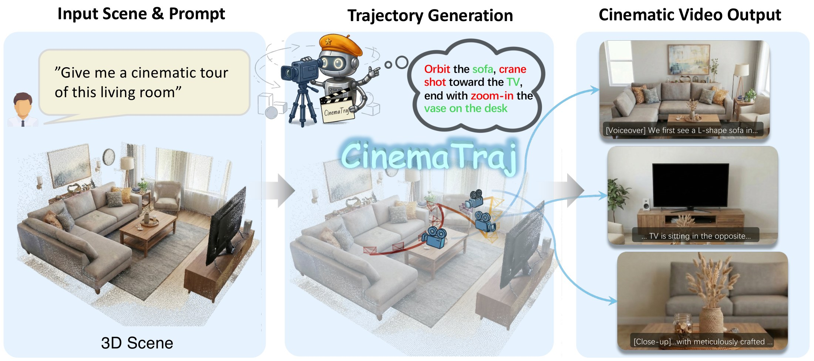
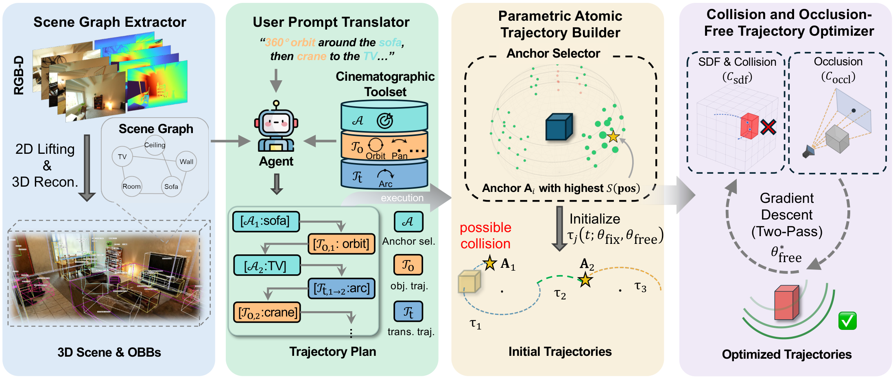
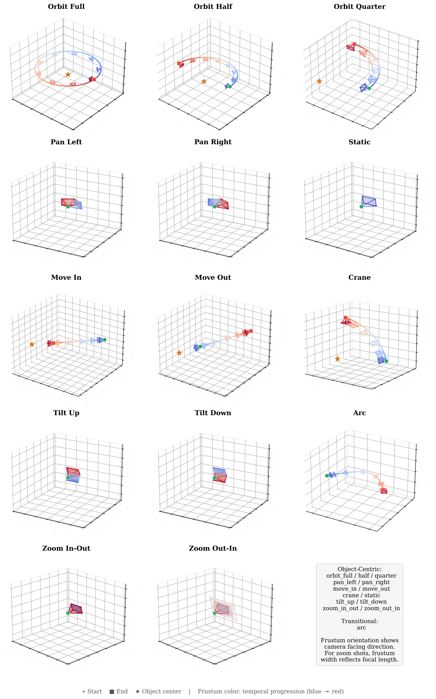
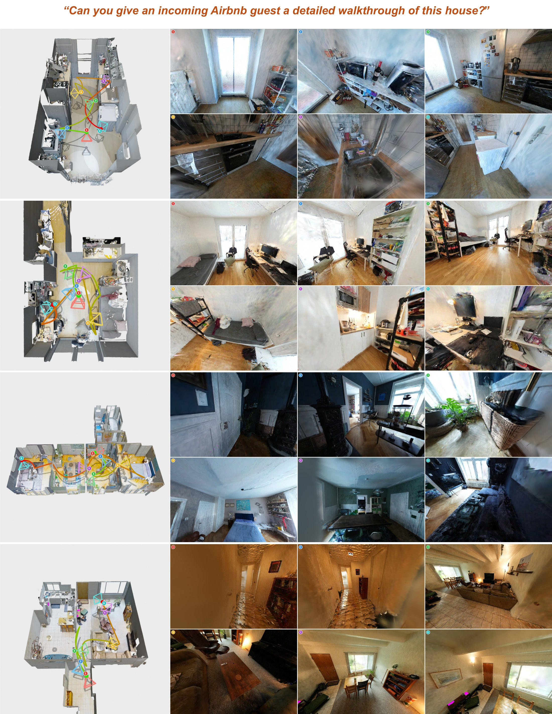

ACM Multimedia 2026
1Technical University of Munich 2Huawei Dresden Research Center (Riemann Lab)
*Equal contribution
†Corresponding author

Automatically generating cinematically expressive camera trajectories through 3D scenes from natural language descriptions is a challenging task of high practical value, with applications ranging from real-estate advertising to virtual tour creation. Existing methods either lack true 3D spatial awareness by relying on 2D image priors, or treat trajectory generation as a geometric path planning problem divorced from cinematographic semantics. We present CinemaTraj, a framework that reframes camera trajectory planning as a language-grounded spatial reasoning problem. Given a set of RGB-D images and a user prompt, CinemaTraj equips an LLM agent with a structured 3D scene graph: the agent decomposes the prompt into a sequence of atomic cinematographic movements (dolly, orbit, crane, pan, tilt, zoom, arc). Each movement is instantiated via a novel parametric trajectory representation that is both cinematographically expressive and optimizable for collision avoidance. The scene graph acts as a structured spatial prior, grounding the agent's reasoning in accurate geometric and semantic knowledge of the environment. CinemaTraj further generates synchronized voiceover and subtitles aligned with camera motion, producing narrated cinematic video outputs. We evaluate CinemaTraj on real-world ScanNet++ environments, and show that it produces prompt-faithful, collision-free trajectories with high cinematographic quality, outperforming existing approaches on prompt alignment, trajectory quality, and safety metrics.


Prompts are color-coded: camera movements and target objects. Each video shows the rendered walkthrough (top) and a bird's-eye visualization of the executed camera trajectory over the scene reconstruction (bottom). Videos play automatically when scrolled into view.
09c1414f1bPrompt “I'd like a specific sequence: First, do an orbit around the table, then do a crane shot on the sofa, then zoom in the bicycle, then pan right toward the refrigerator, and finally do a static view of the sink.”
0cf2e9402dPrompt “First, do a quarter orbit around the microwave, then move in toward the refrigerator, then pan left from the washing machine, and finally tilt down from the kitchen counter.”
2c7c10379bPrompt “Here's what I want: First, move in to the sofa, then do a 360 degrees orbit around the table, then zoom in toward the PC, then do a crane shot of the bed, and finally do a tilt down to the chair.”
Removing the Anchor Selector leads to incorrect object targeting; removing parametric trajectories yields unstructured paths; removing SDF-based optimization causes geometry collisions.
09c1414f1bPrompt “I'd like a specific sequence: First, do an orbit around the table, then do a crane shot on the sofa, then zoom in the bicycle, then pan right toward the refrigerator, and finally do a static view of the sink.”
0cf2e9402dPrompt “First, do a quarter orbit around the microwave, then move in toward the refrigerator, then pan left from the washing machine, and finally tilt down from the kitchen counter.”
2c7c10379bPrompt “Here's what I want: First, move in to the sofa, then do a 360 degrees orbit around the table, then zoom in toward the PC, then do a crane shot of the bed, and finally do a tilt down to the chair.”

| Method | Motion MSE ↓ | CLaTr Score ↑ | Collision Rate ↓ | Occlusion Rate ↓ | Coverage ↑ |
|---|---|---|---|---|---|
| ChatCam + GenDoP | 7.741 | 19.461 | 0.209 | 0.580 | 0.661 |
| CCTG | 9.143 | 24.031 | 0.035 | 0.516 | 0.700 |
| w/o Anchor Selector | 7.055 | 28.538 | 0.023 | 0.579 | 0.882 |
| w/o Parametric Traj. | 2.843 | 26.243 | 0.081 | 0.460 | 1.000 |
| w/o SDF-based Opt. | 1.841 | 25.900 | 0.557 | 0.566 | 1.000 |
| CinemaTraj (Ours) | 1.741 | 28.982 | 0.056 | 0.503 | 1.000 |
| Method | Prompt Alignment ↑ | Collision & Occlusion Avoidance ↑ | Cinematographic Quality ↑ |
|---|---|---|---|
| ChatCam + GenDoP | 2.00 | 1.97 | 2.08 |
| CCTG | 2.38 | 2.93 | 2.16 |
| w/o Anchor Selector | 3.03 | 3.63 | 3.24 |
| w/o Parametric Traj. | 2.89 | 3.40 | 2.14 |
| w/o SDF-based Opt. | 3.17 | 2.01 | 2.60 |
| CinemaTraj (Ours) | 4.62 | 4.56 | 4.36 |
@inproceedings{li2026cinematraj,
title = {CinemaTraj: Composing Atomic Camera Trajectories for 3D Scenes with LLM Agents},
author = {Li, Qianru and Chen, Xuyang and Turkoz, Erkin and Wang, Xuqin and Wu, Tao and Liu, Lu and Zhang, Yanfeng},
booktitle = {Proceedings of the 34th ACM International Conference on Multimedia (MM '26)},
year = {2026}
}